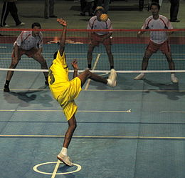

SEPAK TAKRAW

Sepak takraw (Indonesia: Sepak Takraw/Takrau, Bola Takraw/takrau; Myanmar: ပိုက်ကျော်ခြင်း;Malay: sepak raga; Thai: ตะกร้อ, rtgs: takro, pronounced [tā.krɔ̂ː]; Khmer: សីដក់ Sei Dak; Lao: ກະຕໍ້ ka-taw; Filipino: sipà, sipà tákraw, sepák tákraw [sɛ̝päk täkɾɐw]; Vietnamese: cầu mây ("calameae ball" or "rattan ball")),[1] or kick volleyball, is a sport native to Southeast Asia.[2] Sepak takraw differs from the similar sport of Footvolley in its use of a rattan ball and only allowing players to use their feet, knee, chest and head to touch the ball. It is a popular sport in Malaysia, Indonesia & Thailand.
In Malaysia, the game is called sepak raga or takraw. In Laos, it is kataw (Lao: "twine" and "kick").[1] In Thailand, it is called takraw. In Myanmar it is known as chin lone, and is considered more of an art as there is often no opposing team, and the point is to keep the ball aloft gracefully and interestingly. In the Philippines, besides "takraw" it is also known as sipa, meaning "kick".
Similar games include footbag net, footvolley, football tennis, bossaball, jianzi and sipa.